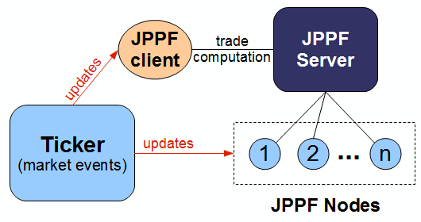
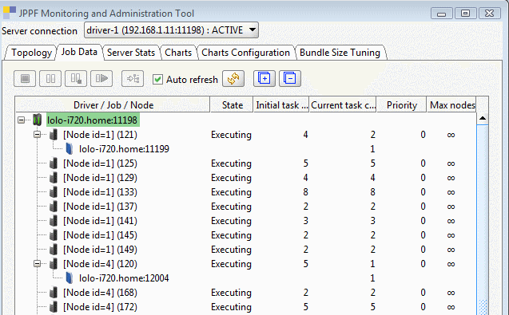
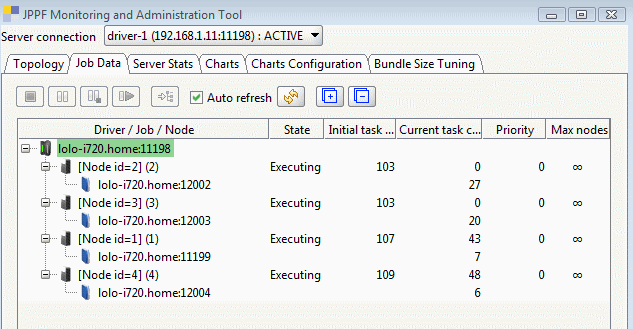
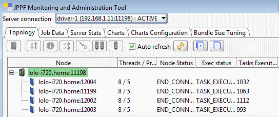

Data Dependency sample |
What does the sample do?
This sample simulates near real-time updates of a portfolio, based on simulated "live" events from financial markets.
Description of the problem to solve
We have:- a portfolio, made of a number of trades T1, ..., Tn
- a number of pieces of market data such as stocks or index tickers D1, ..., Dp
- each trade depends on one or several pieces of market data, for instance:
- T1 depends on D1 and D3
- T2 depends on D2, D3, D4
- T3 depends on D1, D5
- etc...
Description of the solution
The overall architecture of the solution is as follows:
The ticker component simulates market events by picking up, at chosen intervals, a random piece of market data, and notifying the application (JPPF client) as well as the nodes.
To optimize the load on the nodes, the trades are partitioned into multiple groups, each group being associated with a single node. This implies that any trade Ti will always be computed on the same node.
The application generates and keeps a mapping of the trades to the market data they depend on.
The application generates and keeps a mapping of the nodes on which each trade is computed.
When a market event occurs, the following happens:
- the nodes and the application are notified
- the application determines which trades are impacted by the data update
- the application determines on which nodes these trades will be updated and asynchronously submits a JPPF job for each node
- event-based mode: trade update jobs are submitted as each event occurs, simulating a "real-time" flow of trade updates. In this mode, one should be careful that updates are performed fast enough, otherwise the jobs queue will keep growing until all resources are consumed.
- snapshot-based mode: the application simply aggregates the update events and, at regular intervals, submits trade update jobs to the JPPF grid. This mode provides the best overall throughput, but does not allow real-time updates. This is a tradeoff to consider when the market pace is too fast to work in event-based mode.
The implementation relies on the Hazelcast distributed cache API to store the market data and to distribute the trades among the nodes:
- the market data objects are stored in a Hazelcast distributed map that is accessed by the application and all the nodes
- the trades are distributed among a number of distinct distributed maps, each of them accessed by the application and a single node only. This constitutes a partitioning of the set of trades according to the nodes
A node startup class is also used to initialize the Hazelcast data structures in each node at startup time, and provides a convenient API for the tasks to access the distributed data.
To make it easy to simulate various scenarios, the application provides a configuration property for most of the the parameters it uses: number of market data pieces, number of trades, number of market data dependencies per trade, interval between ticker events, event vs. snapshot run mode, duration of each trade computation, etc...
As all events and resulting job submissions are fully asynchronous, the application relies on a pool of connections to the JPPF driver, rather than on a single connection. See server discovery and manual configuration in the JPPF documentation for details on how to do this.
How do I run it?
Before running this sample application, you need to install a JPPF server and at least one node.For information on how to set up a node and server, please refer to the JPPF documentation.
Once you have installed a server and one or multiple nodes, perform the following steps:
- build the archive that will contain the libraries to deploy in the JPPF driver's class path: run either the Ant target "zip" which will generate the file "DataDependency.zip", or "tar.gz" which will generate the file "DataDependency.tar.gz"
- extract the generated archive in the installation folder of the JPPF driver, this will add the files "DataDependency.jar" and "hazelcast-x.y.z.jar" in the "lib" directory. This ensures the nodes will download the startup class and Hazelcast APIs from the server's classpath.
- start the driver and the nodes
- from the sample's "config" folder, open the client configuration file "jppf.properties" in a text editor
- find the line containing "jppf.pool.size = value" and update the value as you see fit (server connection pool size)
- At the end of the file, you will find the configuration of the simulation parameters, for instance:
#------------------------------------------------------------------------------# # Parameters specific to the data dependency application # #------------------------------------------------------------------------------# # Pseudo-random number generator, either "gaussian" or "uniform" (the default). # This determines the distribution of randomly generated data dataFactoryImpl = gaussian # run mode, either snapshot-based or event-based. Possible values: event | snapshot runMode = snapshot # number of market data objects to use nbMarketData = 2000 # number of trade objects nbTrades = 4000 # min and max number of market data object a trade depends on (randomly chosen) minDataPerTrade = 1 maxDataPerTrade = 6 # min and max intervals in milliseconds between ticker events # (computed randomly in the specified range) minTickerInterval = 50 maxTickerInterval = 200 # number of ticker events during the simulation; value <= 0 means no limit nbTickerEvents = 0 # duration of the simulation in milliseconds (after that the ticker stops emitting events) simulationDuration = 10000 # min and max simulated task duration in milliseconds # (task duration is computed randomly in the specified range) minTaskDuration = 50 maxTaskDuration = 100 # interval between 2 snapshots when running in snapshot-based mode snapshotInterval = 3250
- once you have configured your scenario, in the sample's command prompt, type either "run.bat" (on Windows), "./run.sh" (on Linux/Unix) or "ant run" to run the simulation
- for a clearer visualization of what is happening during the simulation, it is recommended to start the JPPF administration UI in the "Jobs" view:
In "event" mode:

In "snapshot" mode:

The "Topology" view shows:

What features of JPPF are demonstrated?
- Integration with a Hazelcast data grid
- Use of a node startup class to facilitate the integration
- Execution policy (to specify on which nodes the trades are computed)
- Asynchronous job submissions
- Extension of the JPPF configuration to application-specific parameters
I have additional questions and comments, where can I go?
If you need more insight into the code of this demo, you can consult the Java source files located in the DataDependency/src folder.
In addition, There are 2 privileged places you can go to:
- The JPPF Forums
- The JPPF documentation
| Copyright © 2005-2013 JPPF.org |
|
|